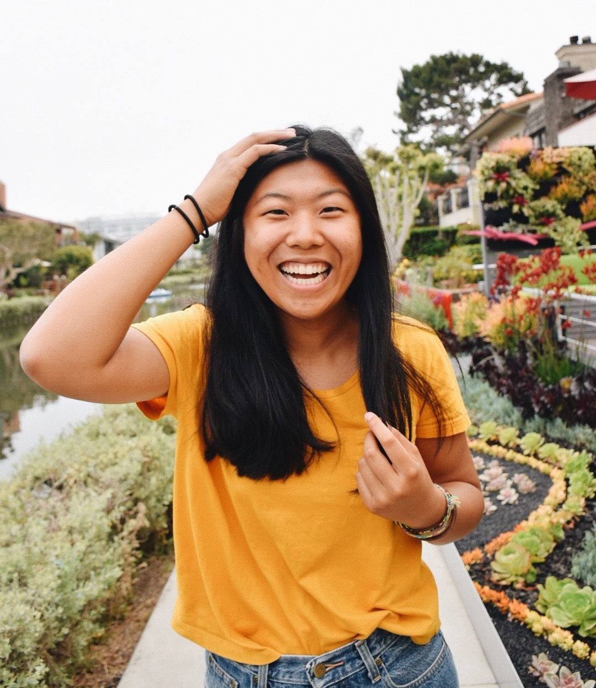
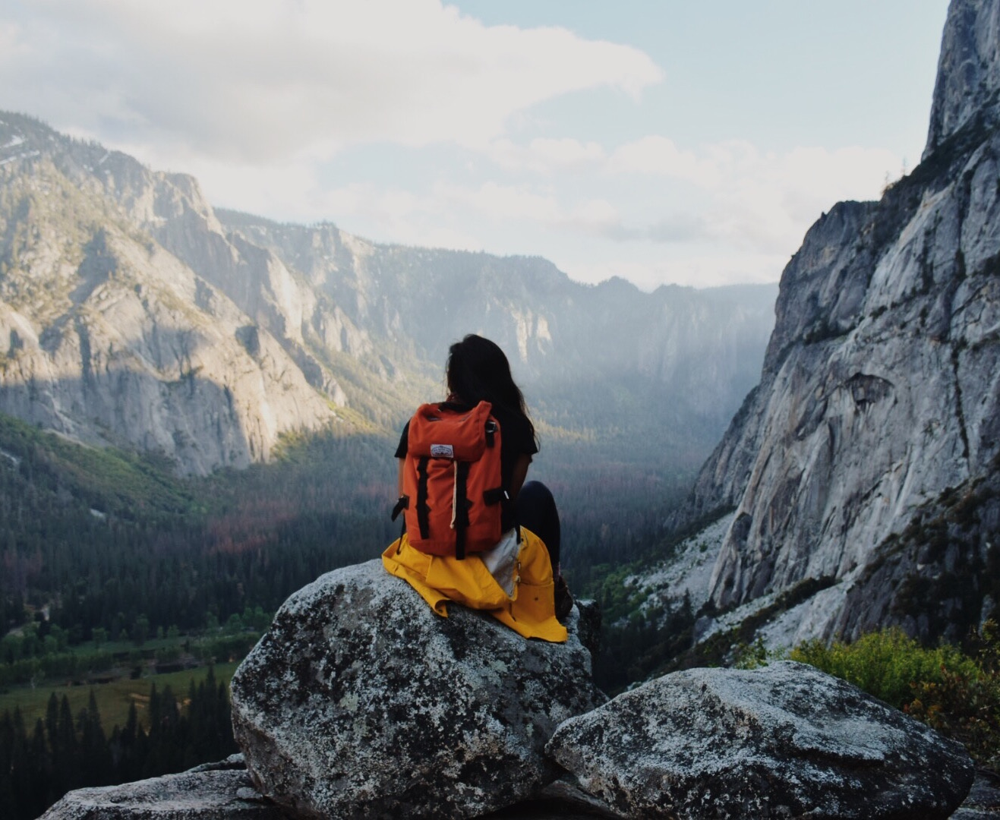
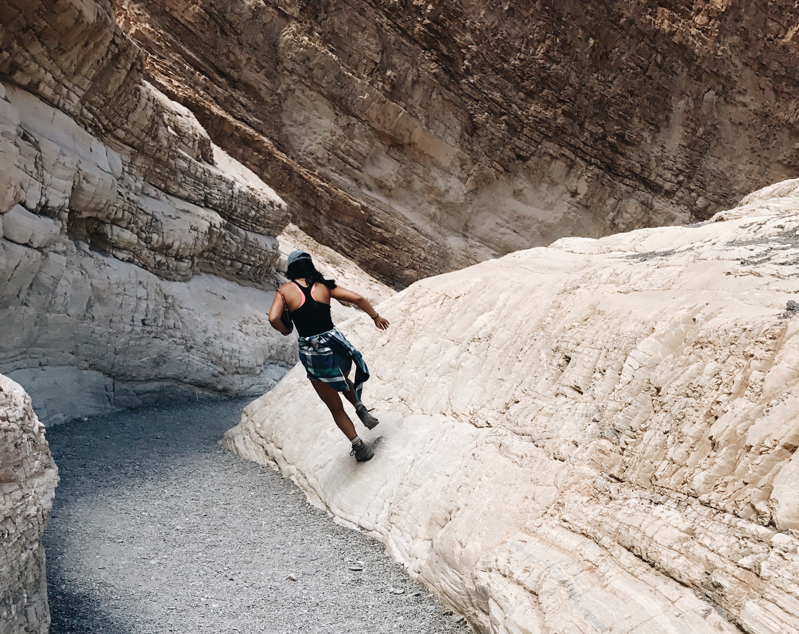

Hi! I'm Dorothy and I'm a driven and passionate full-stack engineer. I love to learn and create new things. Though I'm a Computer Science major, design has always been a focus of mine. I believe that everything is driven by design and when paired correctly, technology and design can create a seamless and unforgettable user experience. It's not necessarily the programming that I'm passionate about, but rather the culture of constantly innovating and creating.

I am an explorer and adventurer first. The curious and thrill seeking person I am translates in and out of my work. These past couple years I've been on many new adventures that has only increased my love and appreciation for this world. From a week exploring Utah's Mighty Five to driving from Virginia to California's coast with two of my closest friends. From backpacking to hiking to kayaking -- this world is incredible and I firmly believe that the best times happen outdoors. I use photographs and videos to share my adventures and encourage people to take risks and get outside!
Follow my adventures >

Living a healthy and active lifestyle is another key part of my life. Staying active and eating well is part of me trying to feel the best I can. I grew up playing sports and that love has only grown as I've grown. From lifting to climbing to playing sports, pushing my body is a great way to relieve nervous energy and stress. It has taught me patience and hard work. I am constantly inspired by other athletes -- from gymnasts to American Ninja Warriors to football players.
